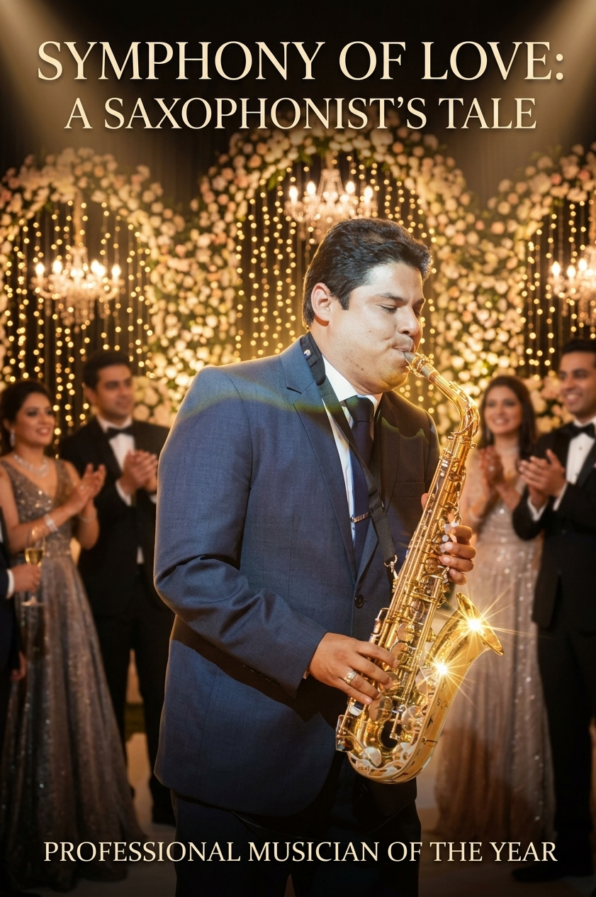

01
Bodas y ceremonias
Entrada de los novios, ceremonia, brindis, primer baile y momentos románticos con saxofón en vivo.
El sonido elegante del saxofón para acompañar tu historia de amor. Presentaciones en vivo para bodas, ceremonias, cócteles y celebraciones especiales en Lima y alrededores.
Soy Victor Cabanillas, saxofonista profesional. Mi propuesta es acompañar cada celebración con música en vivo, sensibilidad y un repertorio adaptado al ambiente que deseas crear.
Desde una melodía romántica durante la ceremonia hasta un repertorio sofisticado para el cóctel, coordinamos cada detalle contigo.
Una presentación a tu medida, coordinada con anticipación para que disfrutes tu evento sin preocupaciones.
Entrada de los novios, ceremonia, brindis, primer baile y momentos románticos con saxofón en vivo.
Un ambiente distinguido con jazz, smooth jazz, bossa nova, baladas y clásicos internacionales.
Cumpleaños, aniversarios, bautizos, cenas privadas y celebraciones corporativas.
Esta sección está preparada para tus fotografías reales. Reemplaza las imágenes de muestra colocando tus archivos en la carpeta fotos y siguiendo las instrucciones incluidas.

Presentación en vivo Eventos especiales
Eventos especialesLas fotos se mostrarán cuando añadas archivos con esos nombres. Recomendación: imágenes horizontales de buena calidad.
Podemos coordinar canciones especiales y el ambiente musical que mejor represente tu evento.
Cada celebración es diferente. Consulta por duración, ubicación, repertorio y requerimientos técnicos para recibir una cotización personalizada.
Una presentación musical para un momento especial de la celebración.
Duración y repertorio por coordinarMúsica en vivo para ceremonia, cóctel o recepción, con selección musical acordada.
Formato personalizadoPropuesta musical personalizada para varios momentos de tu evento.
Consultar disponibilidad y detallesEnvíame la fecha, el distrito o lugar del evento y el tipo de presentación que deseas. Te responderé para coordinar una propuesta.
Lima, Perú · Atención previa coordinación · WhatsApp +51 968 106 975